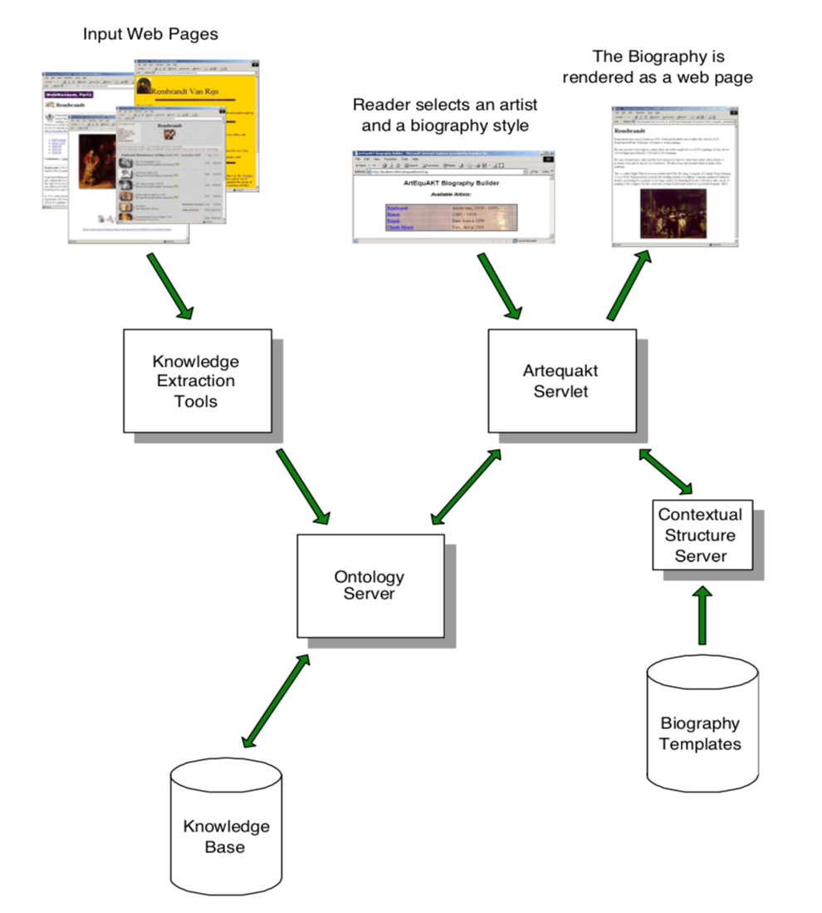
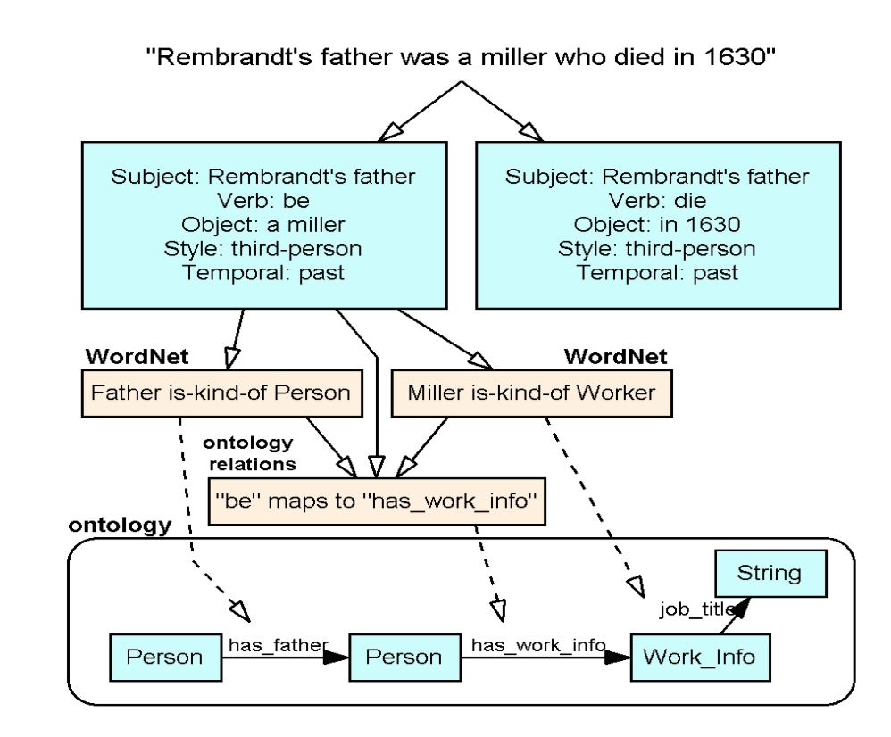
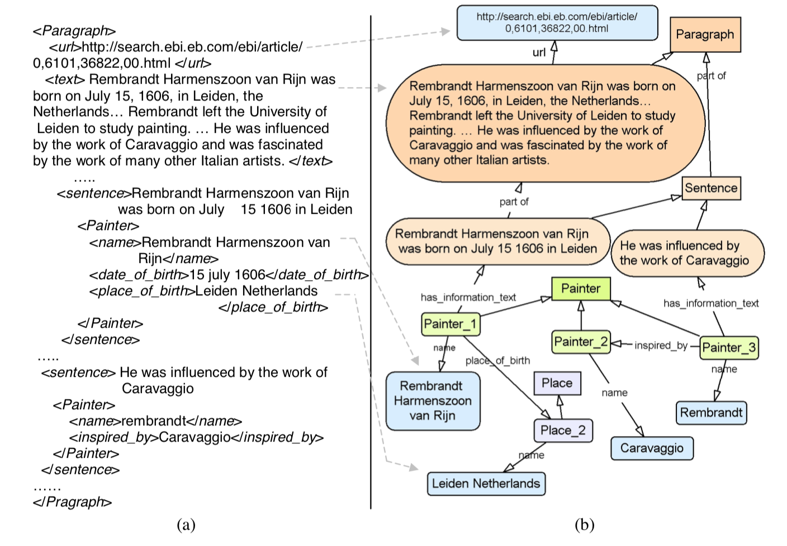
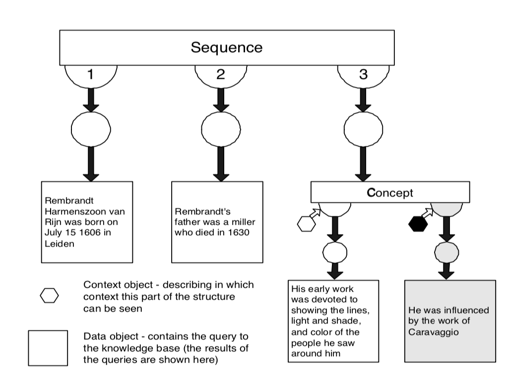
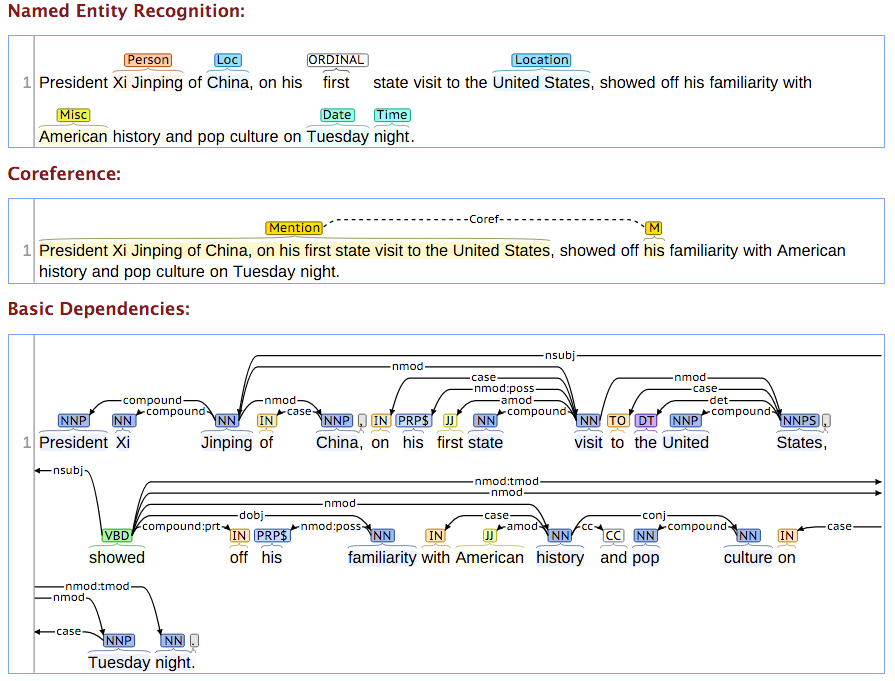
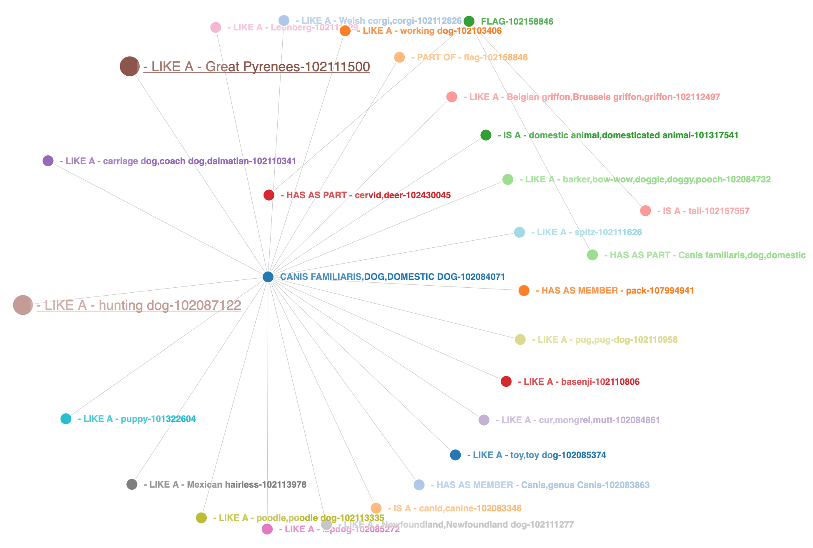
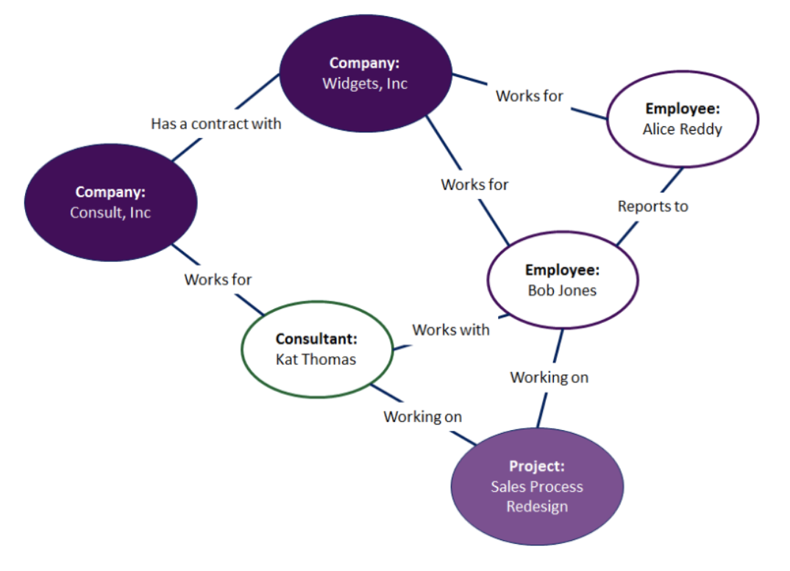
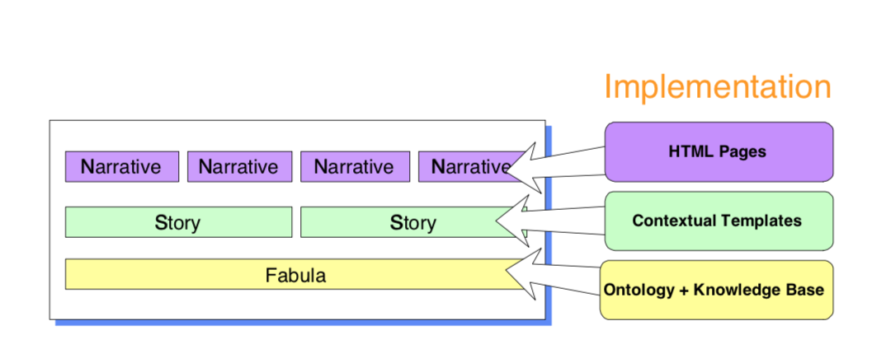

- goal
- system architecture
- Technical Detail
- challenge
- tops & tips
keywords
- Knowledge Base
- Annotation
Our aim is to be able to generate automatically tailored biographies from a knowledge base which has been automatically populated by annotating text fragments extracted from Web documents.
keywords
- Knowledge Extraction
- Information Management
- Biography Construction




keywords
- NER
- Coreference
- POS Tagger
- WordNet
- Ontology
- Fabula, Story, Narrative




keywords
- NLP
Challenge
Different expressions and words
Rembrandt was born in the 17th century in Leiden.
Rembrandt was born in 1606 in the Netherlands.
Rembrandt was born on July 15 1606 in Holland.
Consolidation process for duplicate instances
Relation extraction
Sophisticated narrative structuring of the knowledge fragment
Tops & Tips
Expressive diagram
Well structured
Short and clear description
No evaluation
No end-to-end result analysis
Lack of detail for the crutial technical implementation